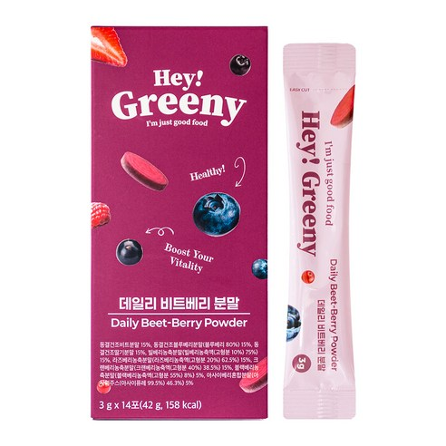
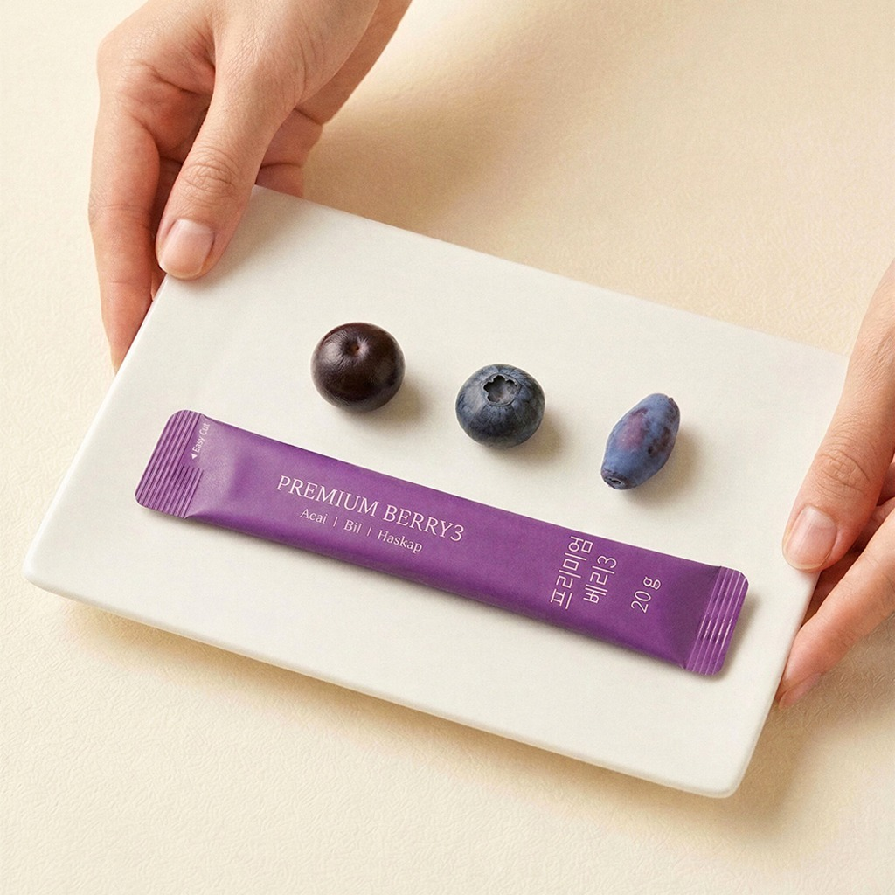
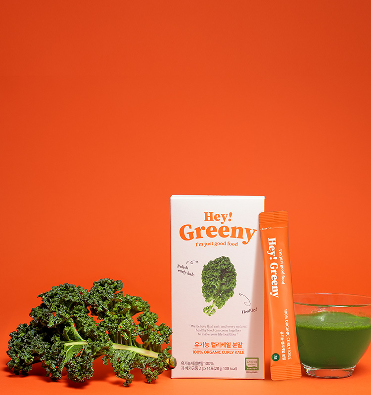
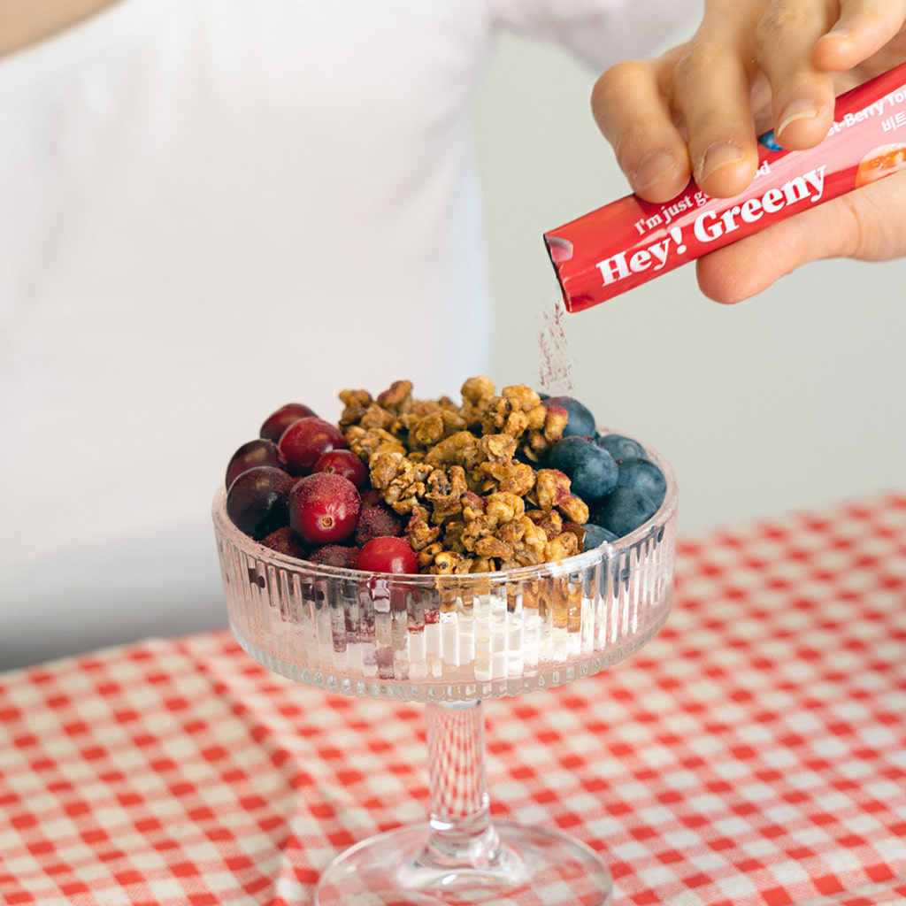
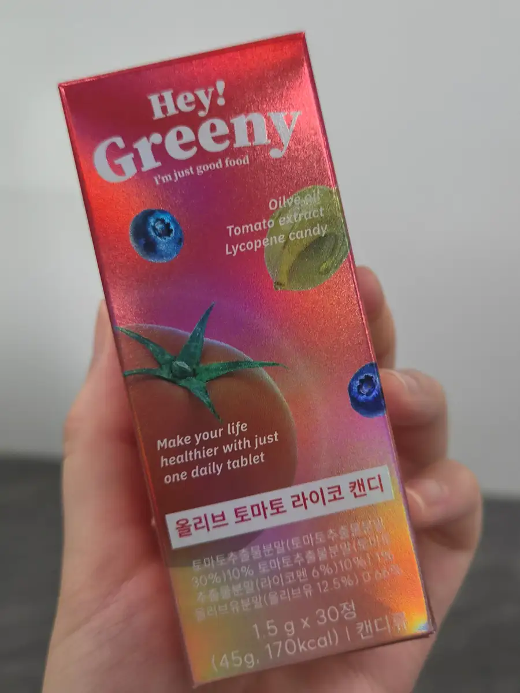
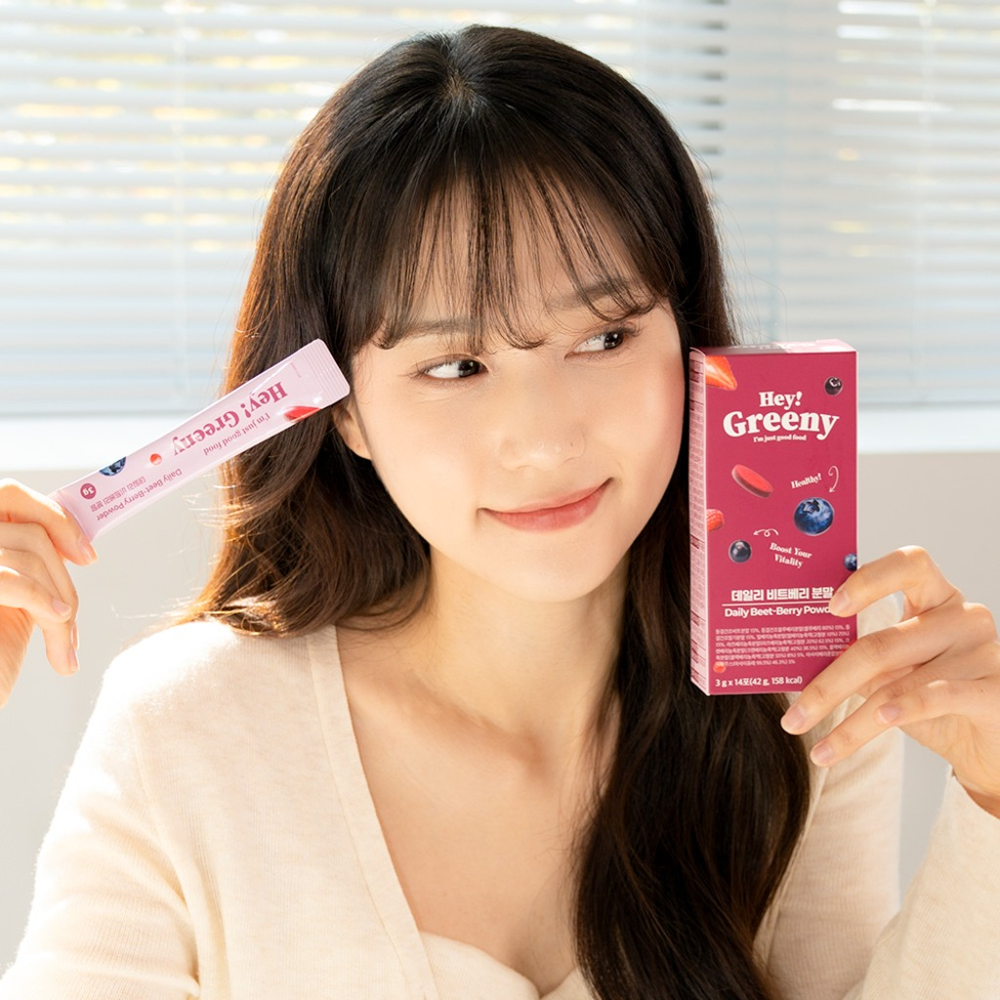

복잡한 영양정보나 어려운 레시피 없이, 누구나 쉽게 섭취할 수 있는 건강식품을 제공해 고객이 매일 조금씩 더 건강해지도록 돕습니다.
40대 이상 타겟 브랜드 · 위닝소재 리서치
HEY
GREENY
매일 조금씩 더 건강해지는 자연스러운 루틴을 위한
HeyGreeny 콘텐츠 리서치.
01
BRAND
헤이그리니
Hey Greeny 란
정답은 늘 자연에 있다고 믿으며, 실험실이나 공장이 아닌 산과 들판, 바다에서 나는 자연 그대로의 성분과 원료 사용을 지향합니다.
자연 그대로의 건강한 식품 하나하나가 모여 삶을 건강하게 만든다고 믿으며, 하루하루 더 건강해지도록 돕습니다.
HeyGreeny혈당 브랜드 · VISUAL MOOD






WINNING MATERIALS
어떤 소재가
멈춰 보게 하는가.
영상은 클릭하면 재생됩니다.
위닝소재 1
BGM · 텍스트 중심
라이프스타일
- BGM과 텍스트만으로 몰입도를 만들고, 내레이션 없이도 메시지 전달
- 자연스러운 엠비언스 사운드로 현실감 강화
- 인상적인 구도 안에서 제품 속 3가지 성분을 간략하게 소개
- 하이앵글 샷으로 제품을 챙기는 일상 루틴을 자연스럽게 연출
- 요거트 · 에이드 · 샐러드 등 다양한 커스텀 제조가 포인트
위닝소재 2
실제 섭취 후기
컨셉
- 실제 구매자의 후기처럼 보이는 형식으로 신뢰감을 만드는 컨셉
- 후기자의 다양한 라이프스타일을 함께 보여줘 공감대 확장
- 후반부는 익숙한 구조지만 신선한 도입부로 몰입도를 끌어올림
위닝소재 3
건강수치 공감
+ 대체 소구
- 건강수치를 제시해 시청자의 공감과 ‘미리 대비해야 할 것 같은’ 인식을 유도
- 비트 손질부터 마무리까지 직접 보여주며 번거로움을 영상으로 표현
- 평소 먹던 것을 제품으로 대체하는 간결한 소구 구조
RECENT VIDEO COMPARISON
페퍼컷 최근 영상
비교 포인트
01
실제 제품 커스텀을 예쁘게 활용
색조합 · 먹는 방식 · 제품 촬영
02
인상적인 구도와 하이앵글 연출로 제품 루틴에 신뢰감 부여
03
후기 컨셉은 40~50대 타겟에서 친숙한 신뢰 구조로 작동
04
건강수치로 “나도 이런 적 있는데”라는 공감 포인트 형성
05
제품 성분을 직접 보여주고, 성분의 역할을 명확하게 전달